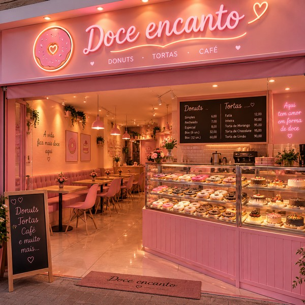

Nossa história
Tudo começou com duas amigas de infância, Cristiane e Júlia, que desde pequenas sonhavam em ser cozinheiras. Enquanto as outras crianças brincavam de boneca, elas brincavam de restaurante: misturavam farinha com água no quintal, inventavam "receitas" malucas e serviam os pais como se fossem clientes de um grande chef.
Anos depois, já adultas, decidiram transformar aquela brincadeira de infância em realidade. Juntaram as economias, alugaram uma cozinha pequena e começaram a testar receitas de donuts e tortas até altas horas da madrugada, errando bastante até acertar o ponto certo de cada massa e cada recheio.
Os primeiros donuts saíam meio tortos, mas o cheiro doce já enchia a rua toda — e os vizinhos começaram a bater na porta antes mesmo da massa esfriar. Foi ali, entre risadas, fornadas queimadas e muita persistência, que nasceu a Doce Encanto.
Hoje já não cabemos mais naquela cozinha pequena, mas o jeito de fazer continua o mesmo de quando éramos duas meninas brincando de cozinhar: tudo fresquinho, do dia, com bastante carinho e nenhuma pressa. Cada donut e cada fatia de torta que sai daqui carrega um pouquinho daquele sonho de infância.

Ingredientes frescos
Compramos pertinho, quase todo dia, pra tudo sair sempre fresquinho.
Feito à mão
Sem receita pronta de fábrica: cada donut e cada torta passa pela mão de alguém daqui.
Bastante carinho
A gente faz pensando em quem vai comer — e isso a gente não terceiriza.